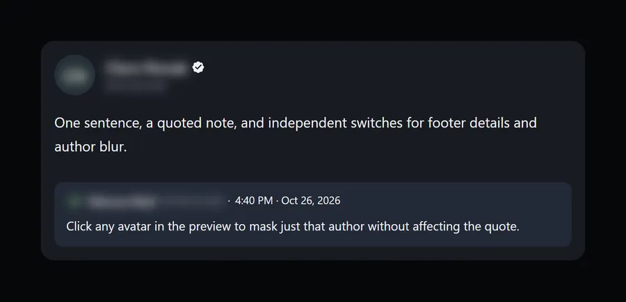

Lewati repotnya memotong dan menangkap layar manual. Klik tombol di postingan (atau tekan Alt + C) untuk menyalin satu postingan atau utas penulis yang sama sebagai kartu 3× tajam langsung ke papan klip. Dua belas tema, seluruhnya dirender di perangkat Anda.
Tengah malamDasar gelap dengan huruf terang, nyaman di malam hari.
Utas tersambung otomatis.
Postingan dalam satu utas digabungkan berdasarkan penulis dan waktu, dengan iklan serta balasan acak tersaring keluar. Dua jalur baca: cache GraphQL milik X terlebih dahulu, lalu DOM yang dirender bila tidak ada cache. Postingan yang tidak ingin ditampilkan bisa dilepas sekali klik.
Tiga postingan oleh satu penulis, salah satunya kutipan: seluruh kartu seperti saat diekspor.
Postingan
3
Foto
2
Kutipan
1
Ekspor
1472 × 2854
Postingan berurutan dari satu penulis digabung; iklan dan balasan pihak ketiga tidak ikut
Utas panjang diekspor pada 2× secara bawaan agar tetap di bawah batas ukuran
Bila kartu akan terlihat terlalu kecil di linimasa, panel memberi tahu sebelum diekspor
Cara screenshot tweet dengan bersih tanpa gangguan
Kebanyakan orang mengambil screenshot tweet untuk dibagikan di presentasi, buletin, atau obrolan grup—lalu malah terbawa balasan, bilah sisi, dan teks buram. Ada tiga cara umum mengubah tweet menjadi gambar, dan masing-masing punya konsekuensi jelas.
Screenshot dari ponsel
Tekan tombol fisik di iOS atau Android, lalu potong bilah status, ikon navigasi, dan balasan pertama di bawahnya. Cepat untuk satu postingan pendek, tetapi resolusinya terkunci di layar, margin tidak rata, dan utas panjang harus disambung manual dari beberapa tangkapan.
Tangkapan area di peramban
Gunakan alat potong sistem atau pintasan peramban untuk menarik kotak di sekitar postingan pada desktop. Kontrol bingkai memang sedikit lebih baik daripada ponsel, tetapi masih terikat DPI layar, antarmuka peramban atau efek hover, dan harus dipotong ulang setiap kutipan atau kisi foto mendekati tepi layar.
Merender postingan sebagai kartu
Alih-alih memotret piksel layar, teks, media, dan struktur utas dibaca lalu ditata ulang di atas kanvas bersih. Kekurangan alat web biasa adalah Anda harus menempelkan URL ke server pihak ketiga, menunggu batas API, atau menerima tanda air dan utas terputus.
PostPress menjalankan cara ketiga sepenuhnya di dalam peramban Anda: klik tombol kartu di postingan X mana pun (atau tekan Alt + C), pilih tema, lalu salin PNG 3× tajam langsung ke papan klip—tanpa balasan dan iklan, tanpa server, dan tanpa login.
Tweet yang dirender secara lokal dalam tema Tengah malam—tanpa bingkai peramban, tanpa balasan nyasar.
Artikel, kutipan, dan kisi gambar tetap utuh.
Artikel X menampilkan sampul dan paragraf pembuka; postingan kutipan diberi latar atau garis tepi sesuai tema; satu hingga dua puluh gambar menjaga proporsinya di dalam kisi, empat per baris setelah empat pertama (Isi penuh memotong menjadi persegi).
“Bukan filter — kertas, garis, dan huruf pada rasio yang tepat.”
ArtikelSampul, rubrik, judul, dan pembuka tampil bersama.
KutipanBerlatar atau bergaris tepi, mengikuti tema.
GambarSatu hingga dua puluh menjaga rasio asli alih-alih dipotong persegi; empat per baris mulai gambar kelima, atau persegi pada mode Isi penuh.
Delapan sakelar, satu Studio.
Tema, kanvas, latar belakang, detail kaki kartu, buram penulis, dan resolusi ekspor semua berada di satu modal Studio ini; ubah satu dan pratinjau langsung ikut berubah. Pilihan Anda diingat sehingga sehari-hari cukup buka lalu klik Salin.
Modal Studio asli: pratinjau kiri dan kontrol kanan tersinkron secara langsung.
Semua aktifQR, statistik, waktu, kredit.Tanpa kakiHanya isi teks.

DiburkanPenulis dan penulis kutipan bersama.
Berjalan di perangkat Anda, dari awal sampai akhir.
Tanpa akun, tanpa server, tanpa telemetri. Penataan terjadi di dalam Shadow DOM terisolasi dan ekspor digambar oleh kanvas peramban sendiri. Selain mengambil gambar yang sudah ada di kartu dari host gambar X, tidak ada yang keluar dari perangkat Anda.
Tidak membaca linimasa Anda, tidak perlu akun X maupun API X. Tidak berafiliasi dengan X Corp.
clipboardWriteMenulis gambar jadi ke papan klip Anda, hanya saat Anda menekan Salin.
storageMengingat tema, kanvas, dan sakelar pilihan Anda; tersimpan secara lokal.
*.twimg.comMengambil gambar kartu. Kanvas tidak dapat membaca gambar lintas-asal tanpa izin ini.
Ke dalam peramban Anda.
Pasang dari Chrome Web Store dalam sekali klik; atau buka tiga langkah bangun dari sumber di bawah.
Dirilis di bawah GPL-3.0-or-later: distribusikan ulang perubahan Anda di bawah lisensi yang sama.
Untuk pengembang: bangun dari sumber (3 langkah)
Bangun
Klon sumber, pasang dependensi, lalu bangun. Hasilnya masuk ke dist/.
Muat
Buka chrome://extensions, aktifkan Mode pengembang, pilih Muat yang belum dibuka paketnya, dan pilih folder dist/.
Pakai
Klik tombol kartu di postingan mana pun (atau arahkan kursor dan tekan Alt + C), klik Salin gambar, lalu tempel di mana saja.
git clone https://github.com/Shirolin/postpress.git
cd postpress
pnpm install
pnpm run build # → dist/
Pertanyaan umum
Delapan pertanyaan nyata, jawabannya di sebelah kanan.
Mengapa tidak langsung screenshot biasa saja?
Memotong screenshot secara manual berarti menghindari balasan, menyambung utas panjang dari beberapa tangkapan, dan pasrah pada DPI layar serta bingkai peramban. Satu klik di PostPress menata seluruh postingan atau utas sesuai aturan tema dan meletakkan gambar 3× tajam langsung di papan klip.
Apakah kartu panjang menjadi buram di linimasa?
Postingan tunggal diekspor pada 3×. Utas yang sangat panjang bawaan memakai 2× agar tetap di bawah batas ukuran; bila teksnya akan terbaca terlalu kecil, panel memperingatkan dan menyarankan pemisahan. Sakelar 3× global tersedia di pengaturan ekspor.
Perlu login atau menghubungkan akun X?
Tidak. Tidak ada sistem akun: ekstensi hanya membaca apa yang sudah dirender di halaman depan Anda dan tidak pernah menyentuh kredensial.
Apakah ada data yang diunggah?
Tidak. Gambar hanya masuk ke papan klip dan disk Anda; menutup pratinjau melepaskan sisanya. Tidak ada isi postingan yang disimpan.
Bolehkah dipakai secara komersial?
Perangkat lunak ini berlisensi GPL-3.0-or-later dan bebas dipakai secara komersial. Teks dan gambar di dalam kartu tetap menjadi milik penulisnya; pastikan sebelum mendistribusikan ulang.
Peramban apa saja yang mendukungnya?
Chrome dan Edge, mulai Chrome 111 (Manifest V3). Firefox dan Safari belum didukung karena ekstensi dibangun di atas API ekstensi Chromium.
Bagaimana cara screenshot tweet tanpa balasan?
Klik tombol kartu PostPress pada postingan (atau arahkan kursor lalu tekan Alt + C). PostPress hanya membaca postingan itu—atau postingan berurutan oleh penulis yang sama dalam utas—dan otomatis menyaring iklan serta balasan pihak ketiga. Jika ada postingan dalam utas yang ingin dilewati, klik sekali untuk mengecualikannya sebelum menyalin.
Bisakah saya mengubah tweet menjadi PNG?
Bisa. PostPress merender kartu secara lokal di peramban Anda dan menyalin PNG 3× langsung ke papan klip (atau mengunduh berkas PNG ke disk). Utas yang sangat panjang memakai 2× secara bawaan demi batas ukuran, dengan opsi 3× di pengaturan ekspor.
Postingan berikutnya layak dicetak di kertas.
Pasang sekali, lalu tombolnya hadir di bilah aksi setiap postingan. Satu klik ke papan klip, siap ditempel di mana saja.